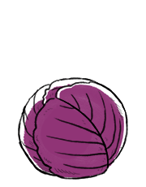

red cabbage
Red cabbage is a good source of vitamin C. It has dark red/purple-colored leaves, although the plant changes its color according to the pH value of the soil, due to a pigment belonging to anthocyanins.
sauerkraut to last the winter.
green cabbage
Green cabbage is a vegetable with dense-leaved heads, closely related to broccoli, brussel sprouts and cauliflower. Cabbage can be pickled, fermented, steamed, stewed, sauteed, braised or consumed raw. Cabbage is a source of vitamin C.
There are winter and summer cabbages, winter cabbages are more dense while summer cabbages are lighter and sweet.